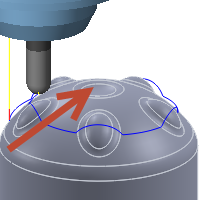
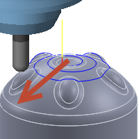

<div id="linkInsideOutside"><p>ツールパスを内側から外側に動かすか、外側から内側に動かすかを指定します。<b>最短加工距離</b> オプションは、順序の混合を使用して最短加工距離を実現します。</p>
<table class="tipTable" cellspacing="10">
<tr>
<td><center></center></td>
<td><center></center></td>
</tr><tr>
<td><center><p><b>外側から内側</b></p></center></td>
<td><center><p><b>内側から外側</b></p></center></td>
</tr></table>
</div>